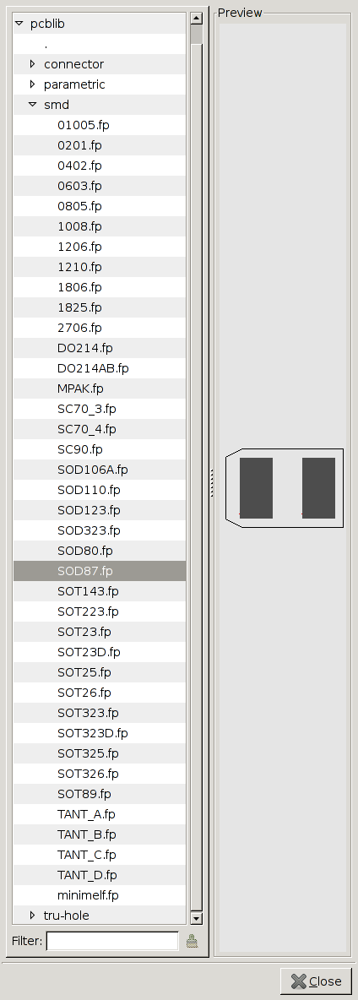

The footprint library shipped with vanilla pcb is cluttered with
special puprose parts. I believe PCB encourages the user from
an early stage to build his own library. Thus the purpose of
the library shipped with PCB should be
to provide a minimal collection of real essential footprints ...
[pcblib] is a replacement of newlib/ and lib/ and the m4 macros with such an essential core library of static footprints ("file elements") and easier-to-use parametric footprints. There is an online map of the library and an online interface to the parametric footprint generators. Design decisionsParts are sorted only in a few directories: smd, tru-hole, connector and parametric. I believe there are so many orthogonal properties of footpritns that there's no obvious hierarchy. Also, pcblib contains much fewer footpritns than newlib so it should be still easy to navigate.Parametric footprints are in a separate directory for now, even tho they would fit under smd, tru-hole or connector. The reason is purely historical and the layout may change in the future. ExampleTo the right: Footprint selection dialog on pcblib, with the smd directory open. Note how few smd parts are there. Still, smd/ is the most crowded subdirectory!save/load and compatibilityNot affected: elements are embedded in the PCB.plansNone, the feature is complete. |  |